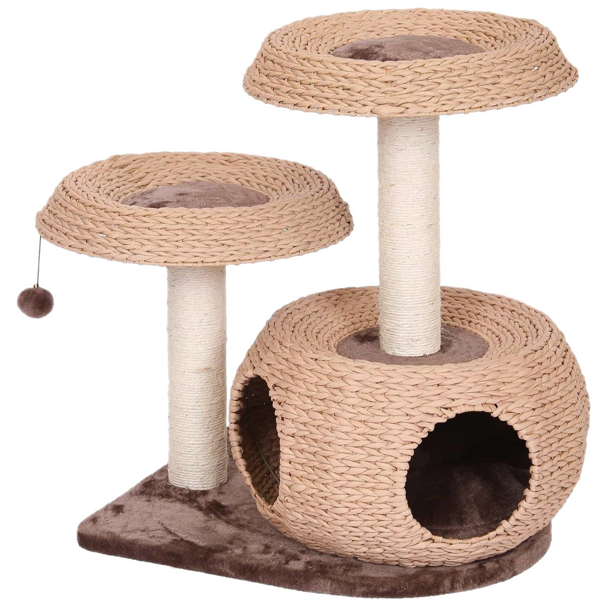
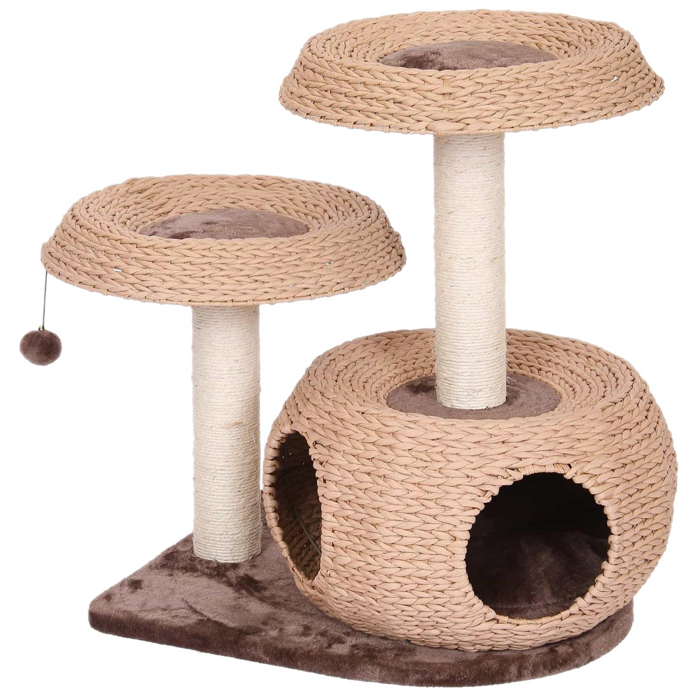

I'm Spencer
a cat programmer.



My name is Spencer Crespo, aka the Feline Computer Guru. I’ll be the cutest programer that you’ll ever see. But do not let the tail and whiskers fool you, I am more than qualified.

Thanks to my nine lives, I was able to fully educate myself about the world of computers. I can program in a variety of languages, leaving no room for set-backs. Any job is conducted in a timely, professional manner. However, I do need breaks for naps and snack time. I try to explore various colors and features that will make the content stand out.
When the code becomes too much for my brain, I turn to the waves. That saying about cats hating water- a myth. The feeling of the cool water over my fur, combined with the adrenaline from trying to keep balance on the board is amazing. Everyone should get to see this, hence why I teach a surfing class on the weekends.